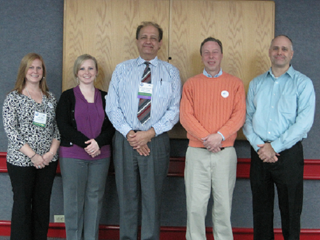

Join Today!
-
Benefits of Joining:
- Professional Development
- Education
- Networking
- GISP Application Mentoring
- Workshop Discounts
- Annual Meetings

About Us: Cumberland Chapter of URISA
A group of 15 GIS professionals from Kentucky and Tennessee met on January 28, 2013 to collaborate and form a new Cumberland Chapter of URISA. Charter members at this "kick-off" meeting elected board members and created the initial draft of Chapter Bylaws. A big "thank you" to everybody who attended, for their valuable insights and contributions!
The Cumberland Chapter of URISA serves as a common platform for professionals and students to meet, share ideas, discuss challenges and solutions, and get involved in local, state, national and international issues that affect the geospatial industry.
The Cumberland Chapter of URISA serves as a common platform for professionals and students to meet, share ideas, discuss challenges and solutions, and get involved in local, state, national and international issues that affect the geospatial industry.
Our Vision
A collaborative community of GIS Professionals in Kentucky and Tennessee with a local focus and an international perspective.Our Mission
To encourage the advancement of geospatial knowledge through education, professional development, ethical practice and advocacy.Chapter Bylaws
Cumberland URISA is guided by a set of Chapter Bylaws. The Bylaws were developed and adopted by local chapter members and may be periodically amended to reflect changes in the local chapter.View the Cumberland Chapter Bylaws.
Letter from the First President
It has been so enjoyable to work with some really smart, dedicated professionals to bring about this newest chapter of URISA. Repeatedly, key members of the inaugural board have ask the question "Why should anyone join this Chapter?". This question was not asked in a cynical manner, but instead, it was asked to make sure we knew why we were coming into existence. So, I think I had better explain this "why". ...2015 Board of Directors
President: Ryan Bowe, GISP, PhotoScience, KY*President-Elect: Pete Croswell, GISP, PMP, CMS, Croswell-Schulte Information Technology Consultants, KY*
Past-President: Ashley Hitt, GISP, Connected Nation, KY
Treasurer: Louie Greenwell, GISP, CFM, T&M Associates, KY
Secretary: TBD
Director: Stephen Berry, GISP, Clark County GIS, KY
Director: Mandy O'Shea, GISP, KCI Technologies, Inc., TN*
Director: Beth Tyrie Fruit of the Loom, Inc., KY
Director: Demetrio Zourarakis, Ph.D., GISP, CMS, Kentucky Division of Geographic Information, KY
*Not present in the below photo 
2014 Board of Directors
URISA International - The Association for GIS Professionals
Our parent organization, the Urban and Regional Information Systems Association (URISA), is a nonprofit association of professionals using Geographic Information Systems (GIS) and other information technologies to solve challenges in state/provincial, regional and local government agencies and departments. URISA is considered to be the premier organization for the use and integration of spatial information technology to improve the quality of life in urban and regional environments. URISA collaborates directly with other national and international organizations to develop standards for data, programs, and professional certification in the GIS industry.URISA hosts conferences, the URISA Leadership Academy, and has established a growing list of certified workshops that are offered to its members. URISA also publishes the GIS Professional newsletter and the URISA Journal.
GISCorps, which provides volunteer GIS support for underdeveloped countries and to support disaster recovery efforts, is also a URISA program.